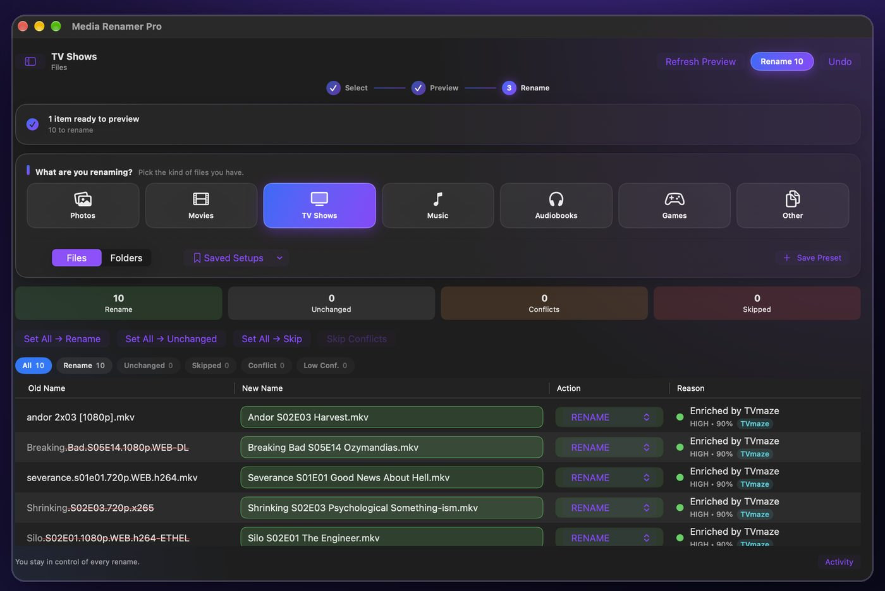
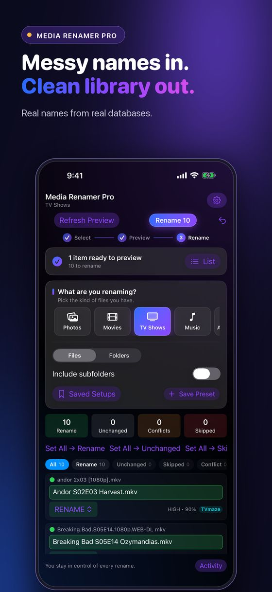
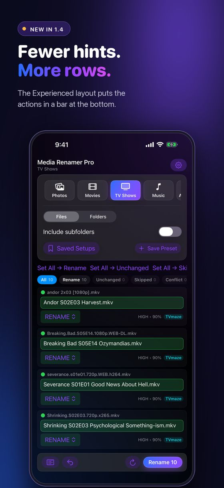
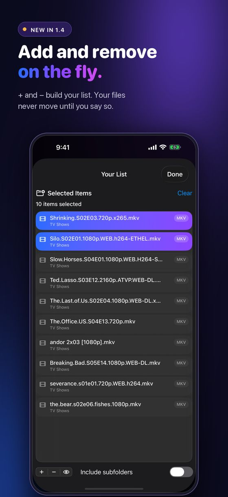
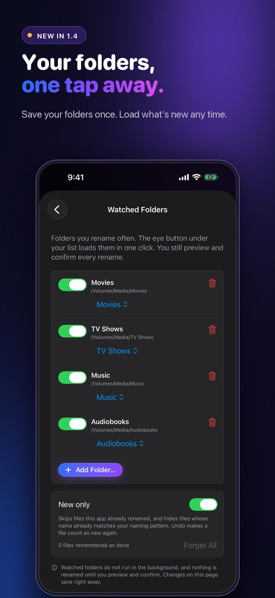
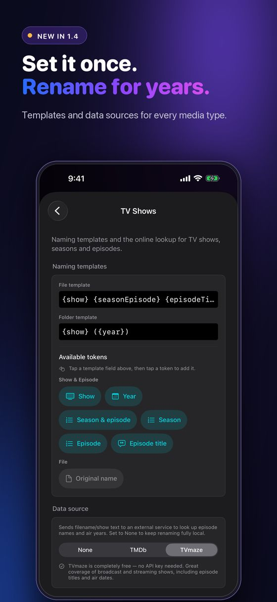

Version 2.0: edit tags, fix matches
Batch rename your media. See every change first.
Media Renamer Pro reads what is inside your movies, TV episodes, photos, music, audiobooks and game ROMs, looks up the real title when that helps, and shows you the whole rename plan before anything moves.
The.Last.of.Us.S02E04.1080p.WEB-DL.x265-GRP.mkv
The Last of Us S02E04 Day One.mkv
US $4.99 once. Mac, iPad and iPhone. No subscription, no ads, no account.

New in 2.0
Edit tags, fix matches, see how sure it is
The biggest update so far. Preview first and Undo still apply to everything below.
Edit tags in the app
Open the tag icon on a row to see and edit the title, artist, album, show, year and cover art. Preview what will be written, then save. Undo puts the file back exactly. Works on MP3, MP4 and MKV files.
Find cover art online
See the pictures, pick one, and Media Renamer Pro embeds cover art inside the file's tags. It still never renames, moves or deletes poster files.
Clean and fill
Wipe junk tags, or fill missing ones from the file name or an online lookup. Blank fields only, and lookups fill confident matches only.
Fix a wrong match
Pick the right movie, show, song or book yourself. It remembers your choice.
A confidence score you can trust
The percentage on each row comes from real evidence, and the reason is one hover away.
Better names, faster runs
Keeps the year in your file name when a title is ambiguous, proper title case for TV episode titles, and quicker repeat runs on big music folders.
Changing tags changes the file itself. Apps that watch files for changes (backup, sync, download or media-manager tools) may treat it as a new or changed file. Undo puts it back exactly.
Full history on the release notes page. Want the walkthrough for watched folders? Read how to rename only the new files in a folder.
Six kinds of media
One renamer for everything on your drives
Most renamers stop at TV and movies. This one covers the rest of what is actually on your drives, each with its own naming template and data source.
TV shows
Real episode titles from TVmaze, TMDb and OMDb, in the SxxExx format Plex, Jellyfin and Emby expect.
Movies
The correct title and year, with the scene tags stripped out. Folders mode renames whole movie folders.
Photos and video
Date taken, camera, city, and on-device AI scene descriptions with Apple Vision.
Music
Artist, album and track number from the tags already inside the file.
Audiobooks
Author and title from Google Books and OpenLibrary, with a chapters mode for multipart books.
Retro game ROMs
Clean titles and region tags from IGDB and RAWG, with a platform-aware era check.
How it works
Nothing moves until you say so
Ten messy TV filenames go in. The app looks up the real episode titles, shows every proposed name side by side, and renames all ten in one click. Undo puts it all back.
Recorded in Media Renamer Pro using copied filename fixtures. No media contents were changed.
Your first rename
Three steps, every time
Start with a copied folder of a few files. You will know within a minute whether it names things the way you like.
- Add files or a folder. Pick the media type, then add files with + or drop them in. On Mac, if Grant Access appears, select the folder itself and click Grant Access.
- Preview. Check the old and new names, the source of each match and its confidence. Any new name can be edited.
- Rename. Keep the app open and the drive connected until the batch finishes. Undo reverts the last saved session.
Why people keep it
Built so a batch rename cannot eat your files
- Preview firstEvery single change is visible before it happens.
- Undo the last sessionRevert the renames recorded in its saved undo log.
- Never overwritesTwo files that resolve to the same name get a suffix, not a collision.
- Only what is newWatched Folders with New only skip the files you already renamed.
- Presets per media typeClick-to-add naming tokens. No regex, no scripting.
- Start from FinderSelect files, right click, Rename with Media Renamer Pro.
- Subtitles follow the videoLanguage and forced tags intact, so Plex and Jellyfin keep pairing them.
- Network shares and NASPreview changes on a mounted SMB share before applying them.
One purchase, every device
Mac, iPad and iPhone
A universal app. Buy it once and it runs on all three. On iPhone and iPad, pick any folder in Files or iCloud Drive, including folders on a network share, and rename right there.





Private by design
Your files stay on your device
Renaming happens on your device. Apple Vision is the default photo engine and runs on-device. Optional cloud engines (OpenAI, Gemini and Anthropic) only send photos when you add your own key and choose that engine. Online title lookups and location lookups need a connection, and Local-Only Mode blocks every network request. No account, tracking, ads or telemetry in the app. This website has optional analytics that stays off unless you allow it. See Website privacy.
Guides
Naming, done properly
Things I have had to figure out, written down. Useful whatever renamer you use.
How to rename only the new files in a folder
Rename what just arrived and leave the rest alone. Inbox folders, what counts as done, NAS drives that go missing, and Watched Folders.
Read the guide →How to name TV and movie files so Plex and Jellyfin match them
Folder structure, SxxExx, absolute vs aired anime ordering, subtitles, NFO sidecars, and renaming safely over a NAS.
Read the guide →How to set up your folders and filenames so renaming just works
The layout that gets clean names on the first pass for every media type, files that start with S01E01, template tricks, and an FAQ.
Read the guide →Why batch renaming eats files, and the two-phase fix
Chains and swaps are what destroy files in a batch rename. Why one-at-a-time fails, and the probe most tools skip.
Read the guide →Why your subtitles do not show up in Plex or Jellyfin
Base name matching, language codes, forced and SDH flags, the library setting everyone misses, and what renaming does to the .srt.
Read the guide →What breaks when you rename files over SMB and NAS shares
Atomic replace, free space, Finder tags and extended attributes, case sensitivity, and mid-batch failures.
Read the guide →How to name audiobook files so Audiobookshelf, Plex and Emby sort them right
Why parts play out of order, zero-padded part numbers, Title - Author flips, the Audiobookshelf folder layout, and a template that works on a NAS.
Read the guide →Questions
Quick answers
Is Media Renamer Pro free?
It is a one-time purchase of US $4.99 on the App Store. No subscription, no ads, no account, and one purchase covers Mac, iPad and iPhone.
Will it rename anything without asking?
No. It builds a rename plan and shows every old and new name side by side. Nothing on disk changes until you press Rename, and Undo reverts the last saved rename session.
Does it work with Plex, Jellyfin and Emby?
Yes. The default TV and movie templates follow the naming those servers read, like Show S01E02 Episode Title and Movie (Year), and you can change them. The naming guide explains why.
Can it rename files on a NAS?
Yes. Mount the share in Finder (or pick it in Files on iPhone and iPad) and preview as normal. In 1.4 you can save it as a Watched Folder and load only the new files.
Do I need API keys?
No. TVmaze, OpenLibrary, MusicBrainz and RAWG need nothing. TMDb, OMDb and IGDB can use your own free key for better results.
More on the support page, or chat with other users on the Discord.
Requirements
What you need
- macOS 14.0 or laterOn your Mac.
- iOS and iPadOS 17.0 or lateriPhone and iPad.
- One universal purchaseUS $4.99 covers all three.

Rename it all, see it first
Media Renamer Pro for Mac, iPad and iPhone. $4.99 once. No subscription, no account.